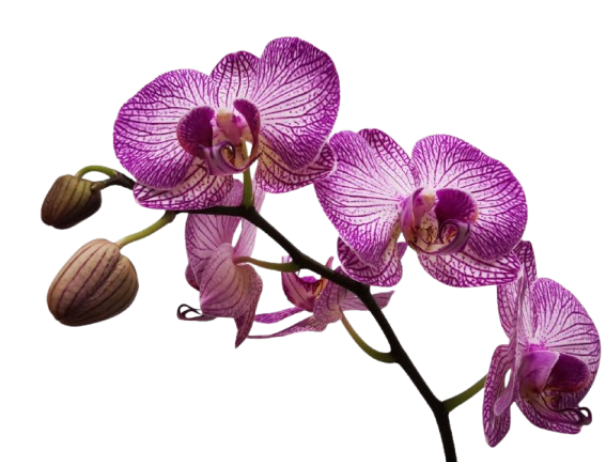
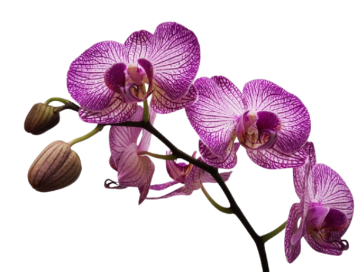

Kerajaan Bali berdiri sekitar abad ke-10 hingga awal abad ke-20. Saat berdiri, Kerajaan Bali berada di bawah kepemimpinan Dinasti Warmadewa. Saat itu, agama yang berkembang adalah Buddha. Selang beberapa tahun kemudian, agama Hindu mulai masuk dan banyak dianut warganya. Pusat dari kerajaan Bali terletak di Bedulu, Gianyar. Letak dari kerajaan Bali ini dekat dengan Pulau Jawa bagian Timur. Keduanya memiliki kedekatan dalam hubungan kebudayaan, termasuk ikatan dengan Dinasti Isyana di Jawa Timur.
Keadaan Ekonomi dan Sosial Kerajaan Bali
Sejak abad ke-10, masyarakat Bali sudah mengenal sistem pertanian yang kemudian dikembangkan sebagai sumber perekonomian. Raja-raja di Bali memusatkan ekonomi dari sektor pertanian. Sebagian besar warga bekerja mengelola sawah, ladang, dan perkebunan. Selain pertanian, peternakan, dan perburuan turut dikembangkan. Beberapa warga lainnya juga ada yang bekerja untuk menjalankan pusat kerajinan dari emas dan perak. Kehidupan sosial Kerajaan Bali tidak terlepas dari adat istiadat yang sudah tertanam sejak dahulu. Bahkan sampai saat ini, budaya turun temurun itu masih dilestarikan.
Jejak Peninggalan Kerajaan Bali
Prasasti Blanjong: Prasasti Blanjong adalah peninggalan bersejarah yang memuat pesan berbahasa Bali dan dibuat oleh Sri Kesari Warmadewa. Prasasti ini ditemukan di Sanur Kauh, Denpasar Selatan.
Prasasti Panglapuan: Prasasti Panglapuan adalah peninggalan kerajaan Bali yang berisi pesan tentang para penguasa kerajaan seperti Udayana, Jayapangus dan Anak Wungsu.

Prasasti Anak Wungsu: Prasasti Anak Wungsu adalah peninggalan dari Raja Anak Wungsu yang berjumlah 28 buah. Selain prasasti, ada Goa Gajah, Pura Gunung Penulisan, dan Pura Gunung Kawi.
Pura Agung Besakih: Pura Agung Besakih merupakan salah satu jejak peninggalan Kerajaan Bali yang masih bisa dikunjungi hingga saat ini.

Candi Padas: Candi Padas adalah situs purbakala pada masa pemerintahan Raja Udayana hingga Raja Anak Wungsu yang letaknya di Sungai Pakerisan, Gianyar, Bali.
Candi Mangening: Candi Mengening termasuk peninggalan masa Kerajaan Bali yang ditemukan pada 1925 di Gianyar. Salah satu arca sakralnya yang masih ada yaitu Lingga Yoni.
Candi Wasan: Jejak peninggalan Kerajaan Bali berikutnya Candi Wasan yang pernah menjadi tempat spiritual pada masanya dengan bukti ditemukan sejumlah arca, salah satunya arca Ganesa.
Pengaruh Peninggalan Kerajaan kepada Budaya di Bali
Dengan peninggalan-peninggalan yang berharga dari kerajaan-kerajaan di Bali tersebut, ini pastinya sangat berpengaruh dengan budaya dan tradisi yang ada di Bali. Karena kebanyakan yang dijadikan peninggalan adalah infrastruktur lama dan berharga, bangunan-bangunan tersebut menjadi sebuah ciri khas Bali yang menjadi pusat kunjungan dari para turis yang datang ke Bali. Candi serta prasasti tersebut juga sudah menjadi salah satu faktor kekayaan budaya dan tradisi yang ada di Bali serta sudah memikat perhatian berbagai masyarakat untuk melihat dan mempelajari budaya Bali. Dengan peninggalan yang diberikan dari masa kerajaan Bali, ciri khas, budaya, tradisi, serta identitas Bali menjadi lebih diketahui oleh banyak orang.